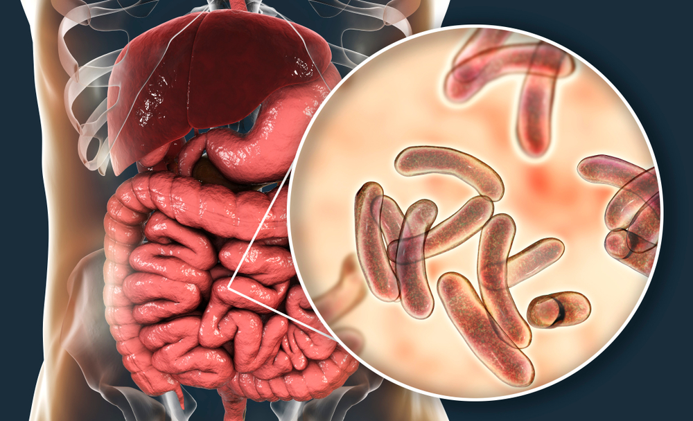

As causas da Cólera!
A cólera é causada pela ingestão da bactéria Vibrio Cholerae. Essa bactéria é um bacilo gram-negativo que pode causar infecções intestinais severas. A infecção ocorre principalmente quando a bactéria entra no corpo através do consumo de água ou alimentos contaminados.

A forma mais comum de transmissão da cólera envolve:
Águas contaminadas: A água potável contaminada é a principal fonte de infecção. A vibrio Cholerae pode estar presente em fontes de água que foram poluídas por fezes humanas ou animais que contêm a bactéria.
Alimentos contaminados: Alimentos especialmente aqueles que são consumidos cruz ou mal cozidos como vegetais, frutos do mar e frutas, podem ser contaminados com a bactéria. O consumo de frutos do mar crus ou mal cozidos provenientes de águas poluídas, é uma fonte comum.
Contágio Directo: Embora menos comum, a cólera pode ser transmitida através do contacto directo com uma pessoa infectada, especialmente se houver contacto com fezes contaminadas.
Além da presença da bactéria existem vários factores que contribuem para a propagação da mesma doença. Tais como: Falta de saneamento básico, Regiões com pobreza extrema, Chuvas intensas ou inundações, entre outros.
Concluindo...
A cólera é uma doença ligada directamente ás condições sanitárias e ao acesso de água limpa. A compreensão das causas e dos factores que contribuem para sua propagação é fundamental para implementar medidas eficazes de prevenção e controle
